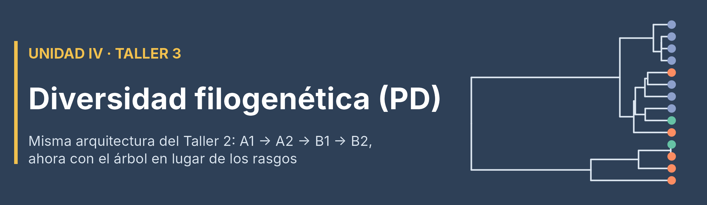
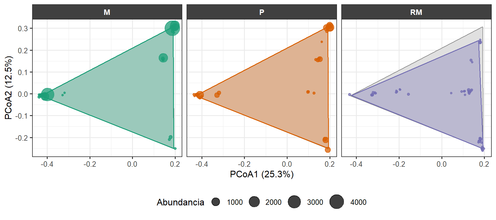
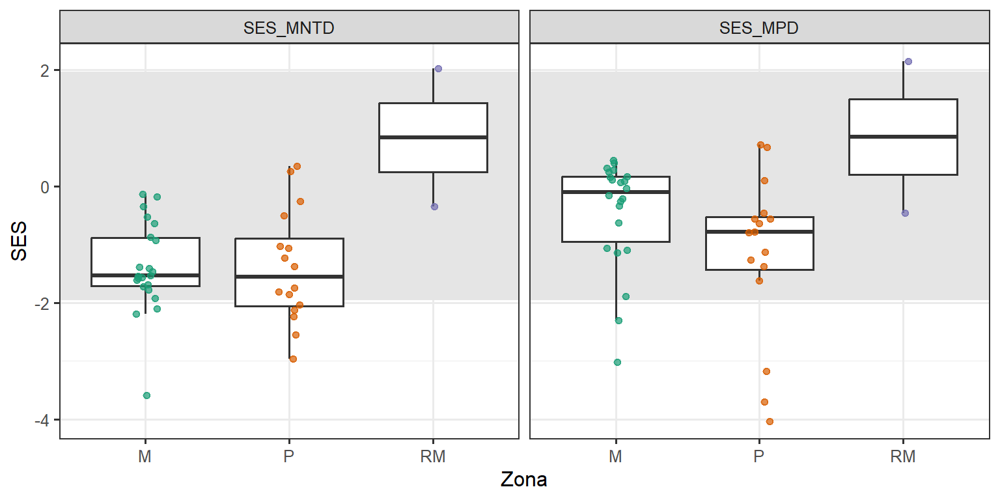
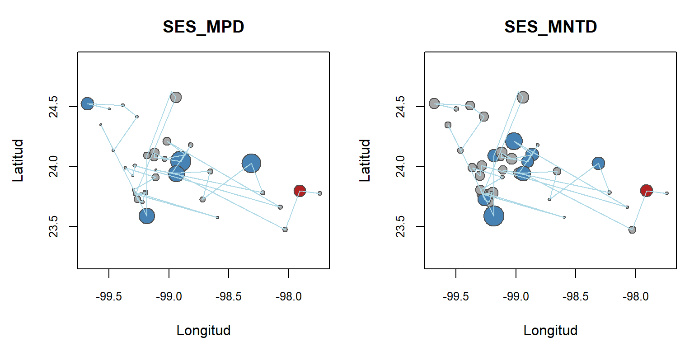
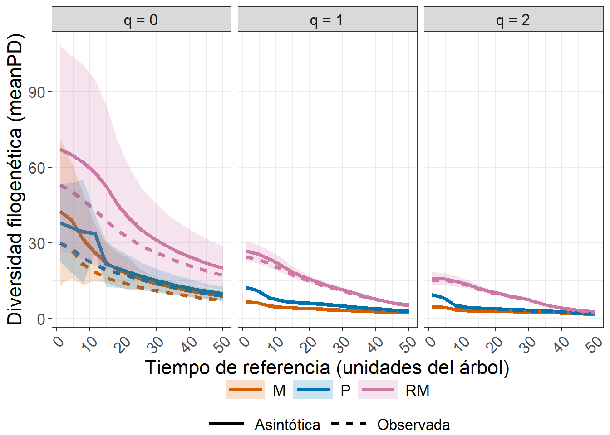
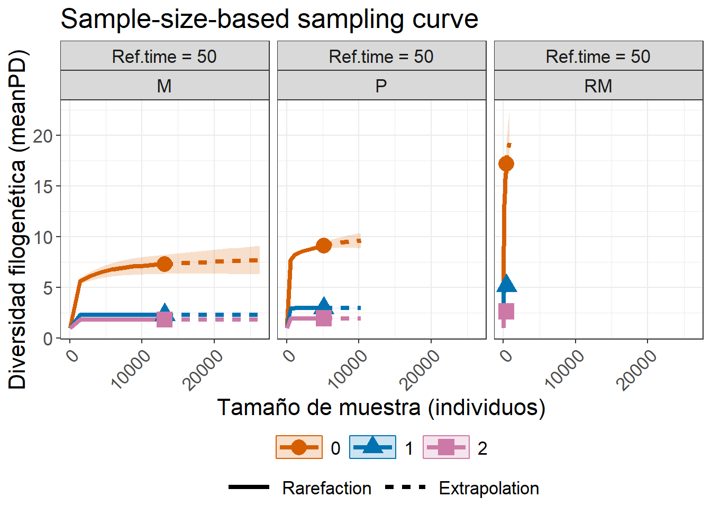
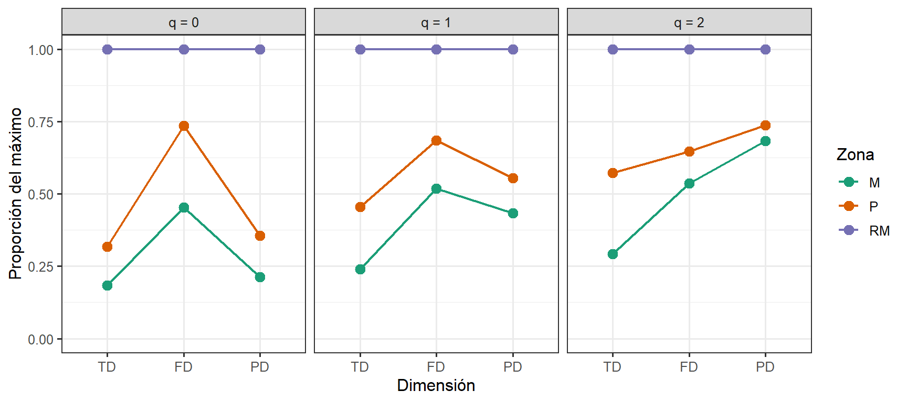

NotaCómo usar esta guía
Esta guía reúne los temas del Taller 3 que no caben en la sesión de clase pero que ayudan a entender mejor la diversidad filogenética y a tomar decisiones en el estudio de caso. No es necesario leerla completa ni en orden: cada sección es independiente y responde una pregunta concreta.
| Sección | Pregunta que responde | Bloque del taller |
|---|---|---|
| 1 | ¿Excluir o ubicar a una especie que falta en el árbol? | Preparación |
| 2 | ¿Qué tan fino es un árbol taxonómico? ¿Existe un “espacio filogenético”? | Preparación |
| 3 | ¿Las especies están más o menos emparentadas que por azar? | A1 |
| 4 | ¿Cómo se mide la regularidad filogenética? | A1 |
| 5 | ¿Qué es el tiempo de referencia y cómo se lee su perfil? | B1 |
| 6 | ¿A qué cobertura comparar la beta? ¿Qué hace realmente el alineador? | B2 |
| 7 | ¿Cómo se comparan TD, FD y PD en una sola figura? | Integración |
| 8 | ¿La historia evolutiva predice la función? | Puente FD–PD |
| 9 | Escenarios e interpretaciones para practicar | Todos |
Para ejecutarla se necesitan en la misma carpeta los archivos del taller (datos.xlsx, arbol_filo_beta.rds, Rao.R, alineador.R) y el script preparar_taller3.R, que reconstruye en un solo paso los objetos del núcleo del taller (el código es el mismo, sin explicaciones).
Código
source("preparar_taller3.R") # Crea biol1, zonas, coord, rasgos1, rasgos.d, arbol_filo, phydist, phylo.d, ...
source("Rao.R")
source("alineador.R")
suppressPackageStartupMessages({
library(kableExtra); library(vegan); library(iNEXT.3D); library(iNEXT.beta3D)
})
# Formato común de tablas
tabla <- function(x, caption, digits = 3) {
x %>%
kbl(booktabs = TRUE, digits = digits, align = "c", caption = caption) %>%
kable_styling(bootstrap_options = c("striped", "hover", "condensed"),
full_width = FALSE, position = "center") %>%
row_spec(0, bold = TRUE, color = "white", background = "#2E4057")
}1. ¿Excluir o ubicar a una especie que falta en el árbol?
En el taller, Notropis aguirrepequenoi se ubicó en su subfamilia en lugar de excluirla. ¿Habría importado excluirla? Primero, cuánto pesa en los datos:
Código
tibble(Zona = zonas$Zona,
Notropis = biol1[, "Notropis aguirrepequenoi"],
Total = rowSums(biol1)) %>%
group_by(Zona) %>%
summarise(Notropis = sum(Notropis), Total = sum(Total), .groups = "drop") %>%
mutate(`Porcentaje (%)` = round(100 * Notropis / Total, 1)) %>%
tabla("Peso de Notropis aguirrepequenoi en cada zona", digits = 1)| Zona | Notropis | Total | Porcentaje (%) |
|---|---|---|---|
| M | 994 | 13166 | 7.5 |
| P | 2 | 5151 | 0.0 |
| RM | 0 | 414 | 0.0 |
Ahora, un análisis de sensibilidad: se repiten dos métricas con y sin la especie.
Código
sin_sp <- colnames(biol1) != "Notropis aguirrepequenoi"
zona_sin <- biol_zona_sp[, sin_sp]
arbol_sin <- drop.tip(arbol_filo, "Notropis aguirrepequenoi")
phy_sin <- cophenetic(arbol_sin)[colnames(zona_sin), colnames(zona_sin)]
rao_con <- Rao(biol_zona, dfunc = NULL, dphyl = phylo.d)
rao_sin <- Rao(as.data.frame(t(zona_sin)), dfunc = NULL, dphyl = as.dist(phy_sin / max(phy_sin)))
tibble(
Zona = zonas_id,
`Riqueza con` = rowSums(biol_zona_sp > 0),
`Riqueza sin` = rowSums(zona_sin > 0),
`MPD pond. con` = mpd(biol_zona_sp, phydist, abundance.weighted = TRUE),
`MPD pond. sin` = mpd(zona_sin, phy_sin, abundance.weighted = TRUE),
`Rao PD con` = as.numeric(rao_con$PD$Alpha),
`Rao PD sin` = as.numeric(rao_sin$PD$Alpha)
) %>%
tabla("Sensibilidad de las métricas a la exclusión de N. aguirrepequenoi", digits = 2)| Zona | Riqueza con | Riqueza sin | MPD pond. con | MPD pond. sin | Rao PD con | Rao PD sin |
|---|---|---|---|---|---|---|
| M | 30 | 29 | 45.02 | 41.62 | 0.45 | 0.42 |
| P | 30 | 29 | 48.92 | 48.90 | 0.49 | 0.49 |
| RM | 53 | 53 | 62.03 | 62.03 | 0.62 | 0.62 |
ImportanteLección
Excluir una especie cambia muy poco la riqueza, pero puede cambiar las métricas ponderadas por abundancia en la zona donde la especie es común. Antes de excluir: (1) revisar su abundancia, (2) intentar ubicarla en su género o clado, y (3) si se excluye, reportar un análisis de sensibilidad como este.
2. ¿Qué tan fino es un árbol taxonómico? ¿Existe un “espacio filogenético”?
2.1 Resolución de la distancia
Código
length(unique(round(as.vector(phylo.d), 4))) # Valores distintos de distancia entre pares de especies[1] 17Código
choose(ncol(biol1), 2) # Número de pares de especies[1] 3741Un árbol molecular tendría casi tantos valores distintos como pares de especies. El árbol taxonómico tiene muy pocos, uno por cada nivel de la clasificación compartido (mismo género, misma familia, mismo orden…). Es el equivalente filogenético de los rasgos con valores repetidos del Taller 2: la distancia sirve para comparar, pero tiene poca resolución fina, y la métrica más afectada es MNTD (sección 3), porque depende del vecino más cercano.
2.2 Espacio filogenético por zona
En el Taller 2 se proyectaron las especies en un espacio funcional (PCoA sobre Gower). El mismo procedimiento sobre phylo.d produce un espacio filogenético.
Código
pcoa_pd <- ape::pcoa(as.matrix(phylo.d), correction = "cailliez")
ev <- if (!is.null(pcoa_pd$values$Rel_corr_eig)) pcoa_pd$values$Rel_corr_eig else pcoa_pd$values$Relative_eig
ejes_pd <- as.data.frame(pcoa_pd$vectors[, 1:2]) %>%
setNames(c("PCoA1", "PCoA2")) %>%
rownames_to_column("Especie")
presencia <- biol_zona_sp %>%
rownames_to_column("Zona") %>%
pivot_longer(-Zona, names_to = "Especie", values_to = "Abundancia") %>%
filter(Abundancia > 0) %>%
left_join(ejes_pd, by = "Especie")
hull_total <- purrr::map_dfr(zonas_id, ~ ejes_pd %>% slice(chull(PCoA1, PCoA2)) %>% mutate(Zona = .x))
hulls_zona <- presencia %>% group_by(Zona) %>% slice(chull(PCoA1, PCoA2))
ggplot() +
geom_polygon(data = hull_total, aes(PCoA1, PCoA2), fill = "grey88", color = "grey55", linewidth = 0.4) +
geom_polygon(data = hulls_zona, aes(PCoA1, PCoA2, fill = Zona, color = Zona),
alpha = 0.35, linewidth = 0.7, show.legend = FALSE) +
geom_jitter(data = presencia, aes(PCoA1, PCoA2, size = Abundancia, color = Zona),
alpha = 0.75, width = 0.01, height = 0.01, show.legend = c(size = TRUE, colour = FALSE)) +
facet_wrap(~ Zona) +
scale_size_continuous(range = c(1, 9)) +
scale_color_manual(values = cols_zona) + scale_fill_manual(values = cols_zona) +
labs(x = paste0("PCoA1 (", round(100 * ev[1], 1), "%)"),
y = paste0("PCoA2 (", round(100 * ev[2], 1), "%)")) +
theme_bw(base_size = 12) +
theme(legend.position = "bottom",
strip.background = element_rect(fill = "grey25"),
strip.text = element_text(color = "white", face = "bold"))
ImportantePor qué la PD no es un volumen
Los polígonos de las tres zonas cubren casi todo el espacio, porque basta con tener una especie en cada extremo del árbol para “estirar” la envolvente. La diferencia real está en cómo se reparten los puntos: en M y P la abundancia se concentra en dos o tres linajes dominantes; en RM hay muchos linajes, cada uno con pocos individuos. Los “racimos” aparecen porque las especies del mismo género tienen la misma distancia a todas las demás.
Por eso en PD no se usa un equivalente de FRic basado en volumen, sino métricas basadas en ramas (PD de Faith) y en distancias entre pares (MPD, MNTD).
3. ¿Las especies están más o menos emparentadas que por azar?
En el taller se dejó abierta una pregunta: ¿un MPD de 45 es alto o bajo? Depende de cuántas especies haya y de qué especies había disponibles en la región. Un modelo nulo responde esa pregunta: se baraja al azar la identidad de las especies en el árbol, se recalcula la métrica muchas veces y se compara el valor observado con esa distribución mediante un tamaño de efecto estandarizado:
\[\text{SES} = \frac{\text{observado} - \overline{\text{nulo}}}{\text{desv. est.(nulo)}}\]
- SES < 0 (p < 0,05): especies más emparentadas que por azar → agrupamiento filogenético.
- SES > 0 (p > 0,95): especies menos emparentadas que por azar → dispersión filogenética.
- NRI = −SES(MPD) y NTI = −SES(MNTD) (Webb et al., 2002).
- MNTD (mean nearest taxon distance) es la distancia promedio de cada especie a su pariente más cercano: mide la estructura terminal del árbol (¿hay muchos congéneres?), mientras que MPD mide la estructura profunda.
3.1 Por zona
Código
set.seed(2026)
ses_mpd_z <- ses.mpd(biol_zona_sp, phydist, null.model = "taxa.labels",
abundance.weighted = TRUE, runs = 499)
ses_mntd_z <- ses.mntd(biol_zona_sp, phydist, null.model = "taxa.labels",
abundance.weighted = TRUE, runs = 499)
tibble(Zona = zonas_id,
MPD = ses_mpd_z$mpd.obs, SES_MPD = ses_mpd_z$mpd.obs.z, p_MPD = ses_mpd_z$mpd.obs.p,
MNTD = ses_mntd_z$mntd.obs, SES_MNTD = ses_mntd_z$mntd.obs.z, p_MNTD = ses_mntd_z$mntd.obs.p) %>%
tabla("Estructura filogenética por zona frente al modelo nulo (499 réplicas)")| Zona | MPD | SES_MPD | p_MPD | MNTD | SES_MNTD | p_MNTD |
|---|---|---|---|---|---|---|
| M | 45.017 | -1.206 | 0.116 | 14.589 | -1.292 | 0.068 |
| P | 48.920 | -2.430 | 0.018 | 15.611 | -1.692 | 0.030 |
| RM | 62.031 | -0.045 | 0.484 | 23.246 | 0.760 | 0.796 |
3.2 Por sitio
Código
set.seed(2026)
ses_mpd <- ses.mpd(biol1, phydist, null.model = "taxa.labels", abundance.weighted = TRUE, runs = 199)
ses_mntd <- ses.mntd(biol1, phydist, null.model = "taxa.labels", abundance.weighted = TRUE, runs = 199)
pd_sitios <- tibble(Sitio = rownames(biol1),
SES_MPD = ses_mpd$mpd.obs.z, SES_MNTD = ses_mntd$mntd.obs.z) %>%
left_join(zonas, by = c("Sitio" = "Sites"))Código
pd_sitios %>%
pivot_longer(c(SES_MPD, SES_MNTD), names_to = "Indice", values_to = "SES") %>%
ggplot(aes(Zona, SES)) +
annotate("rect", xmin = -Inf, xmax = Inf, ymin = -1.96, ymax = 1.96, fill = "grey90") +
geom_boxplot(outlier.shape = NA) +
geom_jitter(aes(color = Zona), width = 0.08, alpha = 0.7, show.legend = FALSE) +
scale_color_manual(values = cols_zona) +
facet_wrap(~ Indice) +
theme_bw(base_size = 12)
Código
col_ses <- function(z) ifelse(is.na(z), "white",
ifelse(z < -1.96, "steelblue", ifelse(z > 1.96, "firebrick", "grey65")))
par(mfrow = c(1, 2), mar = c(4.5, 4.5, 3, 1), cex.axis = 0.8)
for (v in c("SES_MPD", "SES_MNTD")) {
plot(coord, asp = 1, pch = 21, col = "grey30", bg = col_ses(pd_sitios[[v]]),
cex = escalar_cex(abs(pd_sitios[[v]])), main = v, xlab = "Longitud", ylab = "Latitud")
lines(coord, col = "light blue")
}
ImportanteCómo interpretar (y cómo no interpretar) estos resultados
- Por zona,
Pmuestra agrupamiento (SES de MPD negativo y significativo);Mva en la misma dirección pero sin llegar al umbral;RMes compatible con el azar. - Por sitio, el SES de MPD casi siempre cae en la franja del azar (con 4 a 10 especies por sitio, el modelo nulo tiene poca potencia), pero el SES de MNTD es negativo en casi todos los sitios de
MyP: muchos congéneres juntos (Gambusia, Poecilia, Ictalurus). - Agrupamiento no prueba filtrado ambiental. Puede deberse al filtrado, pero también a la competencia, a la historia biogeográfica o a cómo se definió el pool regional (Cavender-Bares et al., 2009; Mayfield y Levine, 2010). Aquí el pool mezcla especies marinas y de agua dulce, lo cual favorece encontrar agrupamiento en las zonas de agua dulce.
- La elección del modelo nulo forma parte de la hipótesis.
taxa.labelsbaraja las especies en el árbol;richnessyfrequencyconservan otras propiedades de la matriz. Cambiarlo puede cambiar la conclusión.
4. La faceta de regularidad: PSE y PSV
La tercera faceta de Tucker et al. (2017) (equivalente a FEve) pregunta qué tan uniformemente se reparten las especies en el árbol. picante la mide con la variabilidad (PSV) y la equidad (PSE) filogenéticas (Helmus et al., 2007): valores cercanos a 1 indican especies tan poco emparentadas como en un árbol en estrella; valores bajos indican especies concentradas en pocos clados.
Código
tibble(Zona = zonas_id,
PSV = psv(biol_zona_sp, arbol_filo)$PSVs, # Variabilidad filogenética (presencias)
PSE = pse(biol_zona_sp, arbol_filo)$PSEs) %>% # Equidad filogenética (abundancias)
tabla("Regularidad filogenética por zona")| Zona | PSV | PSE |
|---|---|---|
| M | 0.590 | 0.466 |
| P | 0.619 | 0.506 |
| RM | 0.653 | 0.632 |
PSE es más baja que PSV porque incorpora las abundancias: en las zonas de agua dulce unos pocos linajes concentran la mayoría de los individuos.
5. ¿Qué es el tiempo de referencia y cómo se lee su perfil?
En iNEXT.3D, el tiempo de referencia (T, argumento PDreftime) es cuánto se mira hacia atrás desde el presente (las puntas del árbol) (Chao et al., 2010):
- Con T muy pequeño solo se considera la parte más reciente del árbol, donde cada especie es todavía un linaje independiente: meanPD es prácticamente igual a la diversidad taxonómica (con q = 0, al número de especies).
- Al aumentar T se incorporan ramas cada vez más antiguas, compartidas por varias especies (géneros, familias, órdenes), y meanPD disminuye.
- Con T igual a la profundidad del árbol se integra todo el árbol hasta la raíz: es el valor por defecto que se usó en el taller.
Código
profundidad <- max(node.depth.edgelength(arbol_filo)) # Profundidad del árbol (en este caso, 50)
pd_perfil_tiempo <- ObsAsy3D(
data = biol_zona, diversity = "PD", q = c(0, 1, 2), datatype = "abundance",
nboot = 10, PDtree = arbol_filo,
PDreftime = seq(profundidad / 50, profundidad, length.out = 15) # Funciona con cualquier árbol
)
ggObsAsy3D(pd_perfil_tiempo, profile = "time") +
labs(x = "Tiempo de referencia (unidades del árbol)", y = "Diversidad filogenética (meanPD)",
color = "Zona", fill = "Zona", shape = "Zona", linetype = "Tipo de estimación") +
scale_linetype_discrete(labels = c("Asintótica", "Observada")) +
theme(axis.text.x = element_text(angle = 45, hjust = 1))
NotaLectura del perfil
Con T pequeño RM supera ampliamente a M y P: es su ventaja en número de especies. Al llegar a la raíz la brecha se reduce, pero no desaparece: las especies adicionales de RM no son solo congéneres de las de río arriba, sino representantes de linajes antiguos distintos.
Como complemento, las curvas de rarefacción/extrapolación por tamaño de muestra (en el taller se usaron las de cobertura):
Código
pd_alpha_inext <- iNEXT3D(data = biol_zona, diversity = "PD", q = c(0, 1, 2), datatype = "abundance",
knots = 20, nboot = 10, PDtree = arbol_filo, PDtype = "meanPD")
ggiNEXT3D(pd_alpha_inext, type = 1, facet.var = "Assemblage", color.var = "Order.q") +
labs(x = "Tamaño de muestra (individuos)", y = "Diversidad filogenética (meanPD)",
color = "Orden q", fill = "Orden q") +
theme(axis.text.x = element_text(angle = 45, hjust = 1))
6. ¿A qué cobertura comparar la beta? ¿Qué hace realmente el alineador?
6.1 El nivel de cobertura
Con base = "coverage" y sin level, iNEXTbeta3D() calcula curvas desde una cobertura de 0,5 hasta 1. Tomar el mínimo de toda la curva devuelve siempre 0,5, que es solo el extremo inferior del rango graficado, no una cobertura de los datos. Por eso en el taller se usó la menor cobertura observada entre los pares (Observed_SC(n, alpha)). Ambas opciones pueden dar el mismo orden entre comparaciones, pero no la misma magnitud de β:
Código
pares <- combn(zonas_id, 2, simplify = FALSE) %>%
set_names(map_chr(., paste, collapse = "_vs_")) %>%
purrr::map(\(p) biol_zona[, p, drop = FALSE])
ali <- alinear_beta(pares, arbol_filo)
beta_a <- function(nivel) {
r <- iNEXTbeta3D(ali$pairs_aligned, diversity = "PD", datatype = "abundance", base = "coverage",
level = nivel, nboot = 0, PDtree = ali$tree_aligned, PDtype = "meanPD")
map_dfr(r, ~ .x$beta) %>% dplyr::select(Dataset, Order.q, Beta)
}
nivel_obs <- iNEXTbeta3D(ali$pairs_aligned, diversity = "PD", datatype = "abundance",
base = "coverage", nboot = 0, PDtree = ali$tree_aligned) %>%
map_dfr(~ .x$beta) %>% filter(Method == "Observed_SC(n, alpha)") %>% pull(SC) %>% min()
left_join(beta_a(0.5) %>% rename(`Beta (SC = 0,5)` = Beta),
beta_a(nivel_obs) %>% rename(`Beta (SC observada)` = Beta),
by = c("Dataset", "Order.q")) %>%
tabla(paste0("Beta filogenética a cobertura 0,5 frente a la cobertura observada mínima (",
round(nivel_obs, 4), ")"))| Dataset | Order.q | Beta (SC = 0,5) | Beta (SC observada) |
|---|---|---|---|
| M_vs_P | 0 | 1.235 | 1.210 |
| M_vs_P | 1 | 1.267 | 1.179 |
| M_vs_P | 2 | 1.319 | 1.219 |
| M_vs_RM | 0 | 1.957 | 1.808 |
| M_vs_RM | 1 | 1.955 | 1.881 |
| M_vs_RM | 2 | 1.957 | 1.927 |
| P_vs_RM | 0 | 1.852 | 1.632 |
| P_vs_RM | 1 | 1.835 | 1.712 |
| P_vs_RM | 2 | 1.842 | 1.800 |
6.2 Lo que el alineador hace y lo que no hace
alinear_beta() también puede reetiquetar un árbol en abreviaturas si se le entrega el diccionario. Con el árbol original (sin armonizar):
Código
tax1_alin <- read_xlsx("datos.xlsx", sheet = "tax1") %>% dplyr::select(Abbrev = Abrev, LatinName)
ali_raw <- alinear_beta(pares, readRDS("arbol_filo_beta.rds"), tax1 = tax1_alin)
ali_raw$report[c("tips_dropped", "species_union", "species_kept")]$tips_dropped
[1] "Agonostomus monticola" "Symphurus civitatium"
$species_union
[1] 87
$species_kept
[1] 84El alineador descarta en silencio las puntas que no encuentra en el diccionario (Agonostomus monticola y Symphurus civitatium, que en realidad son dos especies presentes en los datos) y deja fuera a Notropis aguirrepequenoi: termina con 84 de 87 especies. El reporte lo dice, pero solo si se lee. El alineador garantiza que las matrices coincidan; que los nombres sean correctos es responsabilidad del analista.
7. TD, FD y PD en una sola figura
Con los números de Hill es posible comparar las tres dimensiones en la misma escala, al mismo nivel de cobertura y con las mismas especies. Cada valor se expresa como proporción del máximo de su dimensión, para ver el patrón entre zonas sin que pesen las unidades.
Código
nivel_cob <- min(pd_alpha_inext$PDInfo$`SC(n)`)
td_cob <- estimate3D(biol_zona, diversity = "TD", q = c(0, 1, 2), datatype = "abundance",
base = "coverage", level = nivel_cob, nboot = 0)
fd_cob <- estimate3D(biol_zona, diversity = "FD", q = c(0, 1, 2), datatype = "abundance",
base = "coverage", level = nivel_cob, nboot = 0,
FDdistM = as.matrix(rasgos.d), FDtype = "AUC", FDcut_number = 15)
pd_cob <- estimate3D(biol_zona, diversity = "PD", q = c(0, 1, 2), datatype = "abundance",
base = "coverage", level = nivel_cob, nboot = 0,
PDtree = arbol_filo, PDtype = "meanPD")
tres_d <- bind_rows(
td_cob %>% transmute(Assemblage, Order.q, Dimension = "TD", Valor = qTD),
fd_cob %>% transmute(Assemblage, Order.q, Dimension = "FD", Valor = qFD),
pd_cob %>% transmute(Assemblage, Order.q, Dimension = "PD", Valor = qPD)
) %>%
group_by(Dimension, Order.q) %>%
mutate(Relativo = Valor / max(Valor)) %>%
ungroup() %>%
mutate(Dimension = factor(Dimension, levels = c("TD", "FD", "PD")))Código
ggplot(tres_d, aes(Dimension, Relativo, color = Assemblage, group = Assemblage)) +
geom_line(linewidth = 0.8) + geom_point(size = 3) +
facet_wrap(~ paste("q =", Order.q)) +
scale_color_manual(values = cols_zona) +
scale_y_continuous(limits = c(0, 1)) +
labs(x = "Dimensión", y = "Proporción del máximo", color = "Zona") +
theme_bw(base_size = 12)
TipCómo leer este perfil
RMes la zona más diversa en todas las dimensiones (siempre vale 1), pero su ventaja es mucho mayor en TD que en FD: con q = 0 tiene unas cinco veces más especies efectivas queM, pero solo un poco más del doble de FD. Muchas de sus especies adicionales son funcionalmente redundantes.- En PD con q = 0 la brecha vuelve a ampliarse (linajes raros y distintos), mientras que con q = 2
MyPse acercan aRM. - Una sola dimensión no habría mostrado esta combinación de redundancia funcional y originalidad filogenética.
8. ¿La historia evolutiva predice la función?
Si las especies emparentadas se parecen en sus rasgos (señal filogenética), FD y PD estarán acopladas. Si no, cada dimensión aporta información propia (Cavender-Bares et al., 2009; Tucker et al., 2017).
Código
set.seed(2026)
mantel(rasgos.d, phylo.d, permutations = 999) # Correlación entre distancias funcionales y filogenéticas
Mantel statistic based on Pearson's product-moment correlation
Call:
mantel(xdis = rasgos.d, ydis = phylo.d, permutations = 999)
Mantel statistic r: 0.333
Significance: 0.001
Upper quantiles of permutations (null model):
90% 95% 97.5% 99%
0.0620 0.0883 0.1081 0.1280
Permutation: free
Number of permutations: 999Código
senal <- map_dfr(c("TrophicLevel", "BodyLengthMax", "piscivory", "invertivory"), function(r) {
k <- phytools::phylosig(arbol_filo, setNames(rasgos1[[r]], rownames(rasgos1)),
method = "K", test = TRUE, nsim = 499)
tibble(Rasgo = r, K = k$K, p = k$P)
})
tabla(senal, "Señal filogenética (K de Blomberg) de algunos rasgos")| Rasgo | K | p |
|---|---|---|
| TrophicLevel | 0.972 | 0.002 |
| BodyLengthMax | 0.843 | 0.004 |
| piscivory | 0.577 | 0.002 |
| invertivory | 0.561 | 0.002 |
AdvertenciaLeer la señal con espíritu crítico
- K ≈ 1: la similitud esperada si el rasgo evolucionara al azar a lo largo del árbol; K < 1: menos parecido entre parientes de lo esperado; K > 1: más (Blomberg et al., 2003).
- La correlación de Mantel es moderada (r ≈ 0,3): parientes cercanos tienden a parecerse, pero FD y PD no son redundantes.
- En este caso guiado varios rasgos se homogeneizaron por familia con fines didácticos (ver el Taller 2). Si todas las especies de una familia tienen el mismo valor, la señal queda inflada artificialmente.
9. Escenarios e interpretaciones para practicar
9.1 Cuatro escenarios: ¿qué bloque responde la pregunta?
Para cada escenario, decidir qué bloque (A1, A2, B1 o B2) y qué función usar, e implementarlo con los datos del caso guiado.
- Un comité de conservación quiere saber qué zona alberga más historia evolutiva para priorizarla, pero las zonas se muestrearon con esfuerzos muy distintos.
- Una investigadora sospecha que en la planicie solo sobreviven linajes emparentados tolerantes a la turbidez.
- Se quiere reportar, en una sola tabla, cuánta de la diversidad regional de TD, FD y PD se debe a diferencias entre zonas.
- Se pregunta si la montaña y la planicie comparten los mismos linajes o si cada una tiene los suyos, comparándolas en igualdad de completitud.
TipRespuestas sugeridas
- B1:
estimate3D(diversity = "PD", base = "coverage"), porque compara PD alfa corrigiendo el esfuerzo. A1 o A2 no corrigen el esfuerzo. - A1 con modelo nulo (sección 3): SES de MPD y MNTD para la zona
P. Recordar que un agrupamiento sería compatible con la hipótesis, pero no la prueba. - A2:
Rao(dfunc, dphyl)y su partición α–β–γ en las tres dimensiones. - B2:
iNEXTbeta3D(diversity = "PD")para el parM_vs_P, a una cobertura común.
9.2 Cuatro interpretaciones con errores: ¿qué está mal?
- “La PD de Faith de
RMes casi el doble que la deP; por lo tanto,RMtiene linajes más distintos entre sí.” - “El SES de MPD de la planicie es −2,4; esto demuestra que el ambiente de la planicie filtra los linajes.”
- “Con
Reftimepequeño solo se consideran los linajes más antiguos del árbol, por eso los valores son tan altos.” - “La beta filogenética entre
MyRMes 1,9 y la funcional fue mayor; entonces la historia evolutiva no importa en esta cuenca.”
TipQué está mal en cada una
- La PD de Faith crece con la riqueza (
RMtiene 53 especies frente a 30). Para hablar de qué tan distintas son las especies hay que usar MPD, que no depende directamente del número de especies. - Agrupamiento no demuestra filtrado: también puede deberse a la competencia, a la biogeografía o a la definición del pool regional. Además, el árbol es taxonómico.
- Es al revés: T se mide desde el presente. Con T pequeño solo se consideran las puntas, y meanPD se acerca al número de especies.
- Que una dimensión diferencie más no hace irrelevante a la otra: una β de 1,9 sobre un máximo de 2 indica que las zonas casi no comparten linajes. Además, β funcional y filogenética no están en la misma escala si una se calcula con Rao y la otra con Hill.
Lecturas de referencia
Blomberg, S. P., Garland, T., y Ives, A. R. (2003). Testing for phylogenetic signal in comparative data: behavioral traits are more labile. Evolution, 57(4), 717-745. https://doi.org/10.1111/j.0014-3820.2003.tb00285.x
Cavender-Bares, J., Kozak, K. H., Fine, P. V. A., y Kembel, S. W. (2009). The merging of community ecology and phylogenetic biology. Ecology Letters, 12(7), 693-715. https://doi.org/10.1111/j.1461-0248.2009.01314.x
Chao, A., Chiu, C.-H., y Jost, L. (2010). Phylogenetic diversity measures based on Hill numbers. Philosophical Transactions of the Royal Society B: Biological Sciences, 365(1558), 3599-3609. https://doi.org/10.1098/rstb.2010.0272
Helmus, M. R., Bland, T. J., Williams, C. K., y Ives, A. R. (2007). Phylogenetic measures of biodiversity. The American Naturalist, 169(3), E68-E83. https://doi.org/10.1086/511334
Mayfield, M. M., y Levine, J. M. (2010). Opposing effects of competitive exclusion on the phylogenetic structure of communities. Ecology Letters, 13(9), 1085-1093. https://doi.org/10.1111/j.1461-0248.2010.01509.x
Tucker, C. M., Cadotte, M. W., Carvalho, S. B., Davies, T. J., Ferrier, S., Fritz, S. A., Grenyer, R., Helmus, M. R., Jin, L. S., Mooers, A. O., Pavoine, S., Purschke, O., Redding, D. W., Rosauer, D. F., Winter, M., y Mazel, F. (2017). A guide to phylogenetic metrics for conservation, community ecology and macroecology. Biological Reviews, 92(2), 698-715. https://doi.org/10.1111/brv.12252
Webb, C. O., Ackerly, D. D., McPeek, M. A., y Donoghue, M. J. (2002). Phylogenies and community ecology. Annual Review of Ecology and Systematics, 33, 475-505. https://doi.org/10.1146/annurev.ecolsys.33.010802.150448